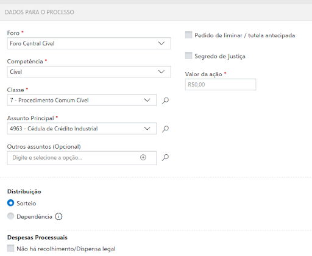

2 Planejamento de Pesquisa
A primeira tarefa a se realizar em qualquer pesquisa quantitativa é o planejamento da pesquisa. O planejamento da pesquisa, ou o desenho de pesquisa, é um plano no qual iremos expor de maneira clara e detalhada como pretendemos investigar o objeto que desejamos; e como iremos tirar conclusões a partir das análises que realizaremos.
No planejamento da pesquisa iremos falar dos métodos e técnicas que serão utilizadas (regressão, estudo de caso, etc), mas não podemos parar nisso. É fundamental que o planejamento de pesquisa deixe muito claro os pressupostos da pesquisa e que discorra sobre os detalhes dela. Não basta dizer, por exemplo, se o método utilizado será de regressão; é preciso dizer qual é a pergunta teórica que se está interessado em responder; e porque a regressão é um modelo adequado para responder a essa pergunta; e que variáveis serão utilizadas para representar os conceitos abstratos (operacionalização).
Para termos uma dimensão crítica do planejamento de pesquisa, precisamos tratar de alguns temas, a saber (i) qual é o papel da teoria em uma pesquisa empírica (Teoria e Empiria); (ii) o que difere uma pergunta jurídica, de uma pergunta jurimétrica (Uma Pergunta de Pesquisa entre Dois Mundos); (iii) como delimiltar o escopo da pesquisa (Escopo do Estudo); (iv) como operacionalizar conceitos abstratos em dados concretos (Operacionalização de Conceitos); (v) de onde extrair dados e o que isso implica (Dados, Tribunais e Processos de Geração de Dados); (vi) se o estudo será amostral ou populacional e como realizar amostragens, caso seja necessário (Amostragem e População).
2.1 Teoria e Empiria
Por mais que exista a distinção entre pesquisa teórica e pesquisa empírica, é importante começar a falar de pesquisa empírica deixando claro um ponto: toda pesquisa empírica deverá se fundar, necessariamente, em uma teoria, pois não existe empiria sem teoria. Um erro comum em pesquisas de dados é o de deixar os dados falarem por si só, deixar os dados guiarem sua pesquisa. Isso normalmente ocorre quando há uma falta de teoria para embasar a análise dos dados. Então não deixemos os dados liderarem a pesquisa, mas tomemos frente neste processo. A teoria é o ponto de partida em uma pesquisa empírica. É a partir dela que iremos pensar sobre o que queremos pesquisar; e é a partir dela que iremos formular nossa pergunta de pesquisa. Os dados nunca guiam a pesquisa. Para continuarmos essas reflexões, há algumas orientações gerais que devemos fazer sobre a teoria em uma pesquisa empírica.
2.1.1 O que a teoria pode nos dar em uma pesquisa empírica?
O primeiro grupo de orientações diz respeito ao que a teoria pode nos dar. A partir dos debates acadêmicos, iremos identificar perguntas relevantes para o mundo e para os nossos pares. As perguntas serão relevantes para o mundo na medida em que ela tentar responder a um problema real. Mas isso não basta. É preciso ter muita clareza do debate teórico e acadêmico dentro do qual estamos nos situando. Um mesmo problema pode ser abordado por diversas correntes acadêmicas de diferentes formas. A teoria, então, irá nos guiar a buscar perguntas relevantes e a nos colocar no debate.
Então, de alguma forma, a teoria irá nos ajudar a identificar problemas no mundo e a debater com nossos pares. Falando especificamente sobre teorias no Direito, como elas podem nos ajudar em pesquisas empíricas? Por “teorias no Direito” me refiro tanto a estudos sociojurídicos, como à doutrina como um todo. A doutrina é essencial para que alguém, interessado em realizar uma pesquisa jurimétrica, identifique questões relevantes a serem investigadas. Como saber de antemão que uma questão relevante em matéria de usucapião é a res habilis, isto é, qual bem pode ser usucapido? Como saber que é importante extrair o tipo de parte de quem ingressa com uma ação civil pública, senão por meio da doutrina informando e discutindo a legitimidade das partes para propor este tipo de ação?
Do outro lado, a sociologia jurídica pode fornecer outro tipo de substrato para embasar as pesquisas empíricas. Por exemplo, é a partir do teorema de Priest & Klein (1984) que podemos identificar o sentido da proporção de sentenças ser 50% favorável ao autor. Não cabe aqui explicar este teorema, mas basta indicar que ele abre portas analíticas importantes para futuras pesquisas em jurimetria.
Assim, o que podemos concluir é que a teoria sempre irá embasar e guiar um estudo empírico.
2.1.2 Como formular teorias a partir de dados empíricos?
O segundo grupo de orientações diz respeito a como a nossa pesquisa poderá contribuir com o conhecimento em geral, ou seja, a como podemos, a partir dos dados e da teoria que estimulou a pesquisa, criarmos uma teoria em retorno. Para tanto, é preciso ter em mente algumas noções.
Em primeiro lugar, é preciso que a teoria formulada seja falseável. Isso significa que a teoria deve ser formulada de uma forma que possa ser dita falsa. Uma “teoria” que nunca poderá ser falseada não é propriamente uma teoria, em termos científicos. E uma teoria só poderá ser falseada “se não estiver vazia a classe de falseadores potenciais”1
Partindo deste princípio da falseabilidade, como, então, devemos formular teorias? A falseabilidade da teoria advirá da quantidade de implicações observáveis que ela criar. Em quanto mais manifestações no mundo empírico a teoria for capaz de se exprimir, mais momentos ela terá para ser testada. E a quantos mais testes a teoria se mantiver de pé, mais robusta ela será. As implicações observáveis, portanto, são a forma de testar a teoria e, dessa forma, é por meio dessas implicações que conectamos a teoria com os dados2.
Em segundo lugar, é preciso se atentar para um trade off entre a generalidade da explicação e a parcimônia. O que desejamos sempre é que a nossa teoria explique da melhor maneira possível a realidade. Entretanto, às vezes, a explicação mais precisa é uma explicação muito difícil de ser compreendida. Neste caso, talvez valha a pena sacrificar a generalidade da teoria, em prol de parcimônia. Por outro lado, teorias muito simples acabam sendo teorias não falseáveis, o que gera outro tipo de problema.
Esse tipo de trade off é muito presente em discussões sobre inteligência artificial. Alguns modelos preditivos conseguem, com muita acurácia, predizer certas situações. Entretanto, esses modelos precisam de aproximações para serem interpretados por humanos3. Em muitas decisões médicas, tem-se utilizado inteligências artificiais para diagnosticarem pacientes4. A acurácia dessas máquinas é muito maior do que a de um médico experiente. Entretanto, não há explicação clara para dar ao paciente. O que acontece nestes casos é que os modelos estatísticos que constituem as redes neurais não foram feitos com o propósito de explicar o mundo; eles foram feitos para gerarem boas predições5.
De alguma forma, as discussões sobre parcimônia e generalidade retratam esse mesmo tipo de problemática. Quando vamos elaborar um modelo matemático para explicar determinada relação no mundo, se perdermos de vista a parcimônia, podemos cair no mesmo problema da inteligência artificial e criamos modelos muito bons do ponto de vista explicativo, mas pouco práticos do ponto de vista de sua interpretação.
Assim, em linhas gerais, o que se recomenda é que a teoria seja falseável, genérica e parcimoniosa.
2.2 Uma Pergunta de Pesquisa entre Dois Mundos
A partir da teoria, criamos perguntas. Essas perguntas são de nosso interesse pessoal imediato, mas também contribuem para o conhecimento geral e discutem com os nossos pares. Uma vez formulada, a pergunta de pesquisa se torna o eixo fundador da pesquisa, pois ela irá guiar todo o projeto a seguir. Essa tarefa de elaborar uma pergunta de pesquisa, entretanto, se mostra difícil quando nos situamos entre duas áreas do conhecimento tão distintas. De um lado, há o Direito, cujas perguntas são elaboradas de forma normativa. Do outro, há a Estatística, que busca descrever o mundo por meio de dados. As perguntas de natureza normativa e descritiva são essencialmente diferentes. Daí a dificuldade de se elaborar perguntas em jurimetria.
No Direito, estamos acostumados com a elaboração de perguntas de natureza normativa. Queremos descobrir o conteúdo jurídico de normas, discutir a hermenêutica de leis, a ratio decidendi de tribunais ou o regime jurídico de determinado instituto. Todos esses temas acabam se voltando em perguntas cujo centro da investigação é a norma. Questões normativas se valem do léxico do dever ser, e mesmo quando se valem do “ser”, elas o fazem descrevendo a norma, descrevendo o abstrato. Alguns exemplos são:
- Quem controla jurisdicionalmente a discricionariedade no Brasil? Qual é o objeto do controle? Como deve ser a discricionariedade controlada?6
- O que é o interesse público?7
- Como devemos tratar as demandas em direito à saúde, elas “devem ser consideradas como ações individuais e sujeitas às regras estabelecidas no Código de Processo Civil ou deveriam ser tratadas como coletivas e sujeitas às normas do Código de Defesa do Consumidor e da Lei da Ação Civil Pública? Ou deveriam receber um regime legal intermediário mais adequado?”8
A abordagem deve ser outra quando falamos de estudos jurimétricos. A questão central não é mais como as normas devem ser, não é mais interpretá-las em um plano abstrato; a questão agora passa a ser descrever a incidência dessas normas no mundo real. Aparecem, então, questões de muitas naturezas.
Um primeiro grupo de questões que aparecem quando olhamos de forma empírica para o direito é a discussão a respeito do efeito e da eficácia das normas. Alguns exemplos são:
- Quais os “impactos da MPV 1.040/2021 no tempo de abertura de empresas”?9
- “Como os agentes tomadores de decisão reagiram à lei 11.343/2006? O padrão das apreensões mudou depois de 2006?”10
Ao lado destas questões, que buscam analisar especificamente o efeito de normas na realidade, aparece um segundo grupo de questões. Esse grupo traz questões que visam descrever a realidade subjacente à norma. Nesse sentido, aparecem pesquisas que buscam compreender:
- Qual é a amplitude dos habeas corpus nos tribunais superiores? E quais são as principais teses jurídicas que são levadas aos tribunais superiores por meio de habeas corpus?11
- Quem acessa o STF e quais questões são levadas à sua apreciação e deliberação? Como decide o STF?12
- Quais são as funções contemporâneas do mandado de injunção?13
A distinção entre as pesquisas dogmáticas e as pesquisas jurimétricas é evidente, quando olhamos para o tipo de perguntas de pesquisa que podem ser feitas. Dessa oposição entre as naturezas das perguntas, surge um questionamento comum: É possível dizer algo sobre o dever ser a partir do ser? Ou seja, é possível dizermos algo sobre o campo normativo a partir da descrição da realidade? E, de forma inversa, o que o mundo normativo pode nos informar sobre o mundo real? Essas são duas relações entre o direito e a estatística que devem ficar em mente quando alguém buscar realizar um estudo jurimétrico.
Essa indagação epistemológica (que busca relacionar o dever ser com o ser) não é exclusivamente da jurimetria, mas é de qualquer estudo empírico do direito, pois todos os estudos empíricos falam da realidade e não da norma. A única diferença da jurimetria para as demais ciências empíricas é que a forma de acessar a realidade, na jurimetria, é por meio da análise de dados quantitativos e não por outros métodos.
Não é o espaço deste livro discutir com mais afinco tais questões. Há, inclusive, uma lacuna muito grande no conhecimento para se discutir isso no momento. O importante é ter em mente que: a pessoa que pretender realizar uma pesquisa jurimétrica deve ter consciência de que as perguntas que ela pode responder por meio de métodos quantitativos talvez não respondam às suas indagações normativas. Essa consciência é importante para determinar se o desenho de pesquisa deverá envolver métodos empíricos quantitativos ou não. Para os fins deste livro, iremos trabalhar apenas com questões que necessariamente envolvem tais métodos, mas na prática do dia a dia, é possível que nem todos os questionamentos possam ser respondidos por métodos quantitativos. Essa limitação não é um problema, pois há muito o que pode ser respondido por esses métodos já.
2.3 Escopo do Estudo
Outra etapa do desenho de pesquisa é a delimitação do escopo do estudo. Há duas dimensões a que devemos nos atentar ao delimitar o escopo do estudo: a dimensão temporal e a dimensão geográfica. Temos que fazer essa delimitação porque, caso contrário, a pesquisa pode tornar-se inviável. Há duas dificuldades que podem inviabilizar a realização da pesquisa caso não haja um escopo bem definido. Primeiro, há um problema prático, de que é muito difícil obter dados para escopos muito amplos. E em segundo lugar, escopos muito largos, tanto geográfica, como temporalmente, podem tornar a variabilidade nos dados muito grandes, dificultando o seu controle na pesquisa.
2.3.1 Escopo temporal
Da dimensão temporal, há dois tipos de estudos possíveis. De um lado, temos estudos prospectivos; do outro, temos estudos retrospectivos. Estudo prospectivo é o estudo que acompanha o processo judicial desde a data de distribuição até o fim. O fim pode ser marcado pela data da sentença, acórdão, ou outro evento de interesse. Ou seja, os casos são indexados pela data de nascimento, e acompanhados até a data de sua morte. Em muitos casos, os processos ainda não atingiram o fim no momento da realização do estudo.
Estudo retrospectivo é o estudo que levanta processos que acabaram (por sentença ou por acórdão) e analisa suas características. Ou seja, os casos são indexados pela data de morte.
Estudos prospectivos são úteis quando o intuito é estudar o tempo das fases do processo. Já estudos retrospectivos são úteis para a análise do perfil de decisões. Estudos que analisam tempos em bases retrospectivas.
A Figura 2.1 mostra os diferentes escopos temporais de cada estudo.
- Prospectivo e retrospectivo
- Apenas prospectivo
- Apenas retrospectivo
- Nenhum dos dois, mas poderia ser capturado por atividade no período
- fora do escopo
- fora do escopo
- Nenhum dos dois tipos e não poderia ser capturado (ficou inativo no período)
2.3.2 Escopo geográfico
Do lado geográfico, o que temos que determinar é, muitas vezes, a região que iremos estudar: será a Justiça Estadual ou Federal? Serão todas as Justiças Estaduais? Ou apenas uma única Justiça Estadual? Os Tribunais Superiores vão entrar na análise? Vou estudar Tribunais Administrativos também? De que lugares?
Todas essas questões dependem de uma série de discussões de Direito para serem respondidas. Existem ações que apenas os Tribunais Superiores têm competência originária, o que levaria a um interesse maior em se estudar o STJ e o STF. Pode também haver um interesse maior em se estudar crimes em determinada localidade, por ter nela alguma característica especial. Neste caso, deve-se determinar qual é o foro competente, pois será este o Tribunal de interesse.
O que acontece, porém, muitas vezes, é que não há um critério objetivo para se determinar o escopo geográfico da pesquisa. Neste caso, é muito frequente a utilização de um Tribunal de Justiça conveniente ao pesquisador.
Além da conveniência de se escolher um TJ com familiaridade, é muito importante também pensar na disponibilidade dos dados. Alguns lugares possuem dados mais estruturados, de mais fácil acesso; outros ainda, permitem a raspagem de dados. Mas há tribunais que dificultam a raspagem por meio de CAPTCHAs.
Todas essas questões devem ser registradas ao se escolher o escopo geográfico de pesquisa. Apesar de que escolhas de conveniência não sejam as mais recomendadas, na prática, são elas que guiam a delimitação do escopo geográfico. Desde que essa escolha seja fundamentada e reportada, não há problema nisso. Mas sempre que for possível utilizar outro critério para determinar o escopo, melhor não utilizar um critério de conveniência.
2.4 Operacionalização de Conceitos
Normalmente, as questões teóricas que nos interessam são formuladas em termos abstratos e conceituais, tais como: insegurança jurídica, independência do judiciário, pacificação de conflito social, eficiência, eficácia. A teoria se elabora em cima de conceitos, e conceitos não são visíveis, públicos, confrontáveis, observáveis. Assim, para se analisar empiricamente um conceito, uma grande questão aparece: como representar os conceitos de interesse a partir da realidade?
Preliminarmente, é necessário reconhecer que nenhuma representação de um conceito será precisa, absoluta, unânime e pacífica. Utilizamos representações específicas para conceitos específicos. Em um sentido, as representações são subjetivas, pois ligam-se ao sujeito que irá realizar a pesquisa. Por isso, é preciso evidenciar como essa representação está sendo feita e justificá-la teoricamente. Com isso, reforçamos o ponto de que não existe estudo empírico sem teoria. É uma ilusão acreditar que os dados poderão indicar algo sobre a realidade por si só. Ao lado de toda análise empírica, deve haver uma boa teoria. No caso da operacionalização, será a teoria que irá nos guiar a selecionar a melhor representação da realidade.
Tendo em vista a limitação das representações dos conceitos, podemos voltar a discutir a operacionalização. “Operacionalizar um conceito” significa selecionar alguma representação de um conceito. Se eu quero discutir se a independência judicial contribui para a liberdade econômica, eu devo pensar como eu vou representar os conceitos “independência judicial” e “liberdade econômica”. Qualquer medida que eu queira fazer sobre esses conceitos necessariamente irá passar por uma transformação do conceito in abstrato para alguma representação concreta. Por causa dessa impossibilidade de se falar dos conceitos em abstrato nas pesquisas empíricas, a pergunta de interesse (formulada em termos teóricos, abstratos e conceituais) acaba se transformando em algo muito distante da pergunta original.
Epstein e Martin trazem um exemplo interessante, a partir do estudo de La Porta et al (2014a). A pergunta teórica deste estudo é: “Do independent judiciaries promote economic freedom?”. Entretanto, ao passar pelo processo de operacionalização, a questão que será testada se torna; “In 71 countries, do longer tenures for judges lead to fewer steps that a startup business must take in order to obtain legal status?”. Ou seja, por mais que o estudo esteja interessado em discutir a relação entre independência judicial e liberdade econômica, o que se está sendo observado são outras coisas. Para representar a independência judicial, os autores usam a duração do tempo de estabilidade dos juízes. Quanto maior o tempo de estabilidade, maior a independência judicial nessa lógica. Do outro lado, para representar a liberdade econômica, os autores estão observando a burocracia para que uma startup consiga seu status jurídico. Quanto menos passos uma empresa tiver que tomar para tanto, maior será a liberdade econômica.
Podemos discutir, através desse exemplo, a questão principal por trás da operacionalização: como mensurar conceitos abstratos? Mensurações ruins distanciam de tal forma o mundo real observado da relação teórica buscada que elas podem minar a discussão por trás. Então em todas as pesquisas iremos passar por uma fase de operacionalização dos conceitos.
É na etapa da operacionalização que iremos buscar por indicadores para representar os conceitos. O mais importante é sempre reportar as escolhas feitas.
2.5 Dados, Tribunais e Processos de Geração de Dados
A operacionalização não pode ser pensada dissociada dos dados existentes no mundo. A forma como a teoria será investigada empiricamente está constrangida pelas limitações dos dados no mundo real. Alguns dados talvez não existam, ou sua qualidade por ser ruim, podendo haver muitas lacunas, informações faltantes ou informações inconsistentes. E todos esses problemas com os dados irão impactar a operacionalização dos conceitos. Por vezes, um conceito pode ser melhor representado por um determinado dado, mas a qualidade deste dado pode estar tão prejudicada, que isso inviabilize a pesquisa. Neste caso, talvez outra operacionalização deve tomar lugar.
Dessa forma é que se faz extremamente importante conhecer os seus dados. Por “conhecer os dados”, queremos dizer que deve-se conhecer o processo de geração dos dados (data generating process). O processo de geração de dados é a forma, por meio da qual, determinada informação foi criada. É extremamente importante documentar e reportar todos esses processos, para que os pares acadêmicos possam validar a pesquisa e as escolhas metodológicas feitas nela.
2.5.1 Dados encontrados
A seguir, temos um exemplo de como os dados são gerados, em um contexto jurídico. Quando vamos analisar processos que tramitam no Judiciário, é muito frequente nos valermos das informações de capa do processo, a saber, o número do processo, nome e funções das partes, data de distribuição, valor da causa, classe e assunto processuais. Entretanto, ao utilizarmos essas informações, nem sempre temos clareza do que está por trás daquelas informações. O caso mais emblemático é aquele do assunto e classe processuais. O assunto e classe são informações padronizadas por meio da Resolução nº 46 do CNJ, que criou as Tabelas Processuais Unificadas. Em seu art. 3º, a Resolução disciplina que “todos os processos ajuizados (processos novos), antes de distribuídos, deverão ser cadastrados de acordo com as tabelas unificadas de classes e assuntos processuais”, estabelecendo, pois, a obrigatoriedade de se seguir as TPUs.
Ao lado da obrigatoriedade de se cadastrar um processo com a sua classe e assunto processuais, é preciso saber também quem está encarregado de o fazer. Cada Tribunal possui uma Resolução própria regulamentando isso, mas a regra é sempre a mesma: o advogado, na hora de peticionar, é quem irá, obrigatoriamente, escolher a classe e o assunto processuais. No caso do TJSP, essa informação está disposta no art. 9º, inciso I, da Resolução nº 551/2011, que disciplina: “Art. 9º - A correta formação do processo eletrônico é responsabilidade do advogado ou procurador, que deverá: I - preencher os campos obrigatórios contidos no formulário eletrônico”. Ao olharmos para os campos de preenchimento no ESAJ, encontramos “Classe” e “Assunto” com um asterisco, indicando a sua obrigatoriedade, conforme a Figura 2.2.

Essa obrigatoriedade imposta aos advogados se repete em outros tribunais, seja no STF (art. 9°, Resolução n° 693/2020), seja no TJBA (art. 8º, I, Resolução nº 20/2013), no TJDFT (art. 14, Provimento 12/2017), entre outros. A questão é: uma vez que sabemos como o dado é gerado, o que isso implica para a nossa pesquisa?
O conhecimento do processo de geração de dados nos permite concluir sobre algumas incertezas relativas àquele dado. Como sabemos que a classe e o assunto são informações obrigatórias, podemos presumir que essa informação estará disponível para todos os processos; além disso, como sabemos que classe e assunto são informações padronizadas pelas TPUs, também conseguimos presumir que essa informação será padronizada entre processos e entre tribunais. Entretanto, sabendo que há um humano (no caso, um advogado), que está por trás da classificação dos processos, devemos também esperar que a classificação possa estar errada. Há alguns tipos de erros possíveis: a classificação não condiz com o caso ou a classificação é mais genérica do que o possível. Por causa desses erros possíveis, devemos esperar que o dado de assunto e classe processuais contenham cifras ocultas14. A cifra oculta é a quantidade não observada de determinado dado, o que pode enviesar algumas análises. Se a quantidade não observada for aleatória, ela não irá gerar vieses. Caso contrário, ela será problemática para o estudo.
2.5.2 Dados criados
Sabendo da importância do processo de geração de dados, é que se recomenda sempre buscar ir atrás do processo de geração de dados. Entretanto, muitas vezes, não encontramos dados prontos no mundo; temos de criar dados. Fazemos isso, por exemplo, toda vez que lemos manualmente processos e tentamos classificar informações contidas nos autos. Se no primeiro caso, então, falávamos sobre investigar e reportar a forma como dados existentes foram gerados, neste segundo momento vamos tratar de reportar as modificações e transformações que realizamos nos dados. Dou aqui um exemplo.
É muito comum, ao recebermos uma base de um Tribunal de Justiça, buscarmos pela sentença de cada processo. Muitas bases possuem apenas as movimentações processuais de cada processo. Então, é a partir dessas movimentações, que devemos determinar se aquele processo teve ou não sentença. Essa pergunta pode se repetir para outras informações relevantes sobre o processo: teve ou não teve liminar? Teve ou não teve recurso? Teve ou não teve audiência de conciliação? Para todos estes casos, o procedimento é o mesmo: devemos olhar a descrição das movimentações processuais.
Assim como a Classe e o Assunto eram padronizados pelas Tabelas Processuais Unificadas, a descrição das movimentações também o é. Há um universo finito de movimentações possíveis. Entretanto, por mais que as movimentações sejam bem definidas, elas não trazem em si o seu sentido jurídico. Pode haver uma dúvida se uma determinada movimentação refere-se a uma sentença ou não. Neste momento, portanto, precisamos criar uma variável nova, por exemplo, a variável “teve_sentenca”. O processo por meio do qual nós criamos essa variável é muito importante. É um processo que exige conhecimentos jurídicos e que, portanto, convida os juristas a participarem de sua discussão. Mas é um processo que pode gerar vieses nas análises. E se um pesquisador considerar decisões interlocutórias como sentenças? E se um pesquisador considerar acórdãos como sentenças? E se um pesquisador considerar decisões de conhecimento como sentenças? A depender da pesquisa, essas escolhas podem fazer sentido; mas via de regra, essas escolhas levarão a algum tipo de distorção dos dados, podendo superestimar ou subestimar a quantidade de processos que tiveram sentenças.
Dessa forma, a decisão mais acertada é simplesmente reportar o que foi e o que não foi considerado como sentença. Essa é uma forma simples, segura e, acima de tudo, reprodutível da pesquisa; é uma forma que permite a validação por pares. Veja, no exemplo acima, como o dado criado não existia de pronto no mundo. A variável “teve_sentenca” foi criada no meio da pesquisa. A equipe de pesquisa pôde exercer um grande nível de controle sobre a sua criação. E todas as decisões tomadas ao longo da criação dessa variável puderam ser reportadas e, eventualmente, poderão ser discutidas por outros pesquisadores.
2.5.3 Reporte os processos de geração de dados
Em resumo, há uma orientação geral a respeito dos dados que coletamos e criamos: devemos sempre reportar as incertezas. É comum omitirmos as incertezas e fraquezas dos nossos dados para dar mais credibilidade às nossas teorias; é comum também ficarmos desatentos às implicações dos dados que coletamos para as conclusões que tiramos e, por isso, não damos muita atenção para os processos de geração de dados. Entretanto, uma lição muito importante que devemos levar para a pesquisa quantitativa é que uma boa pesquisa reporta todos os processos de geração de dados, de cada um dos dados da pesquisa. Isso, além de deixar a pesquisa muito mais transparente para a comunidade, pode servir de base para que alguém continue a sua pesquisa, tentando cobrir os seus buracos, ou resolver as suas incertezas.
Além disso, como veremos mais para frente, o que desejamos futuramente realizar são inferências. A inferência é “conhecer o que não pode ser visto, a partir do que é visto”. É o procedimento contrário à dedução – inferência é o mesmo que indução. Enquanto na dedução concluímos com certeza sobre algo, pois apenas derivamos um raciocínio de forma lógica, na inferência o que impera é a incerteza. Para cada conclusão sobre o “não visto” a partir do visto, carregamos muitas incertezas. Neste contexto, então, percebemos que é muita presunção não explicitar as incertezas, pois elas necessariamente existem, e todos sabem disso15.
2.5.4 Uma nota sobre o processo de geração de dados e a inteligência artificial
A discussão a respeito do processo de geração de dados nos ajuda muito a compreender como funcionam inteligências artificiais. Os dados que existem no mundo foram gerados de alguma forma. Esse processo de geração do dado faz com que ele siga uma determinada distribuição no mundo. Este processo pode ser determinístico ou não determinístico. De qualquer forma, na maioria das vezes é, via de regra, inacessível para nós.
O que queremos com a inteligência artificial é conseguir, com os dados observados, reproduzir o processo de geração de dados de forma o mais precisa possível para gerar boas predições. A inteligência artificial, ao reproduzir um processo de geração de dados, pode ajudar a gerar peças processuais automaticamente, classificar informações em autos e até mesmo tentar predizer o resultado de um processo. Mas a inteligência artificial sem interferência humana não é capaz de compreender todos os problemas de viés, erros de preenchimento e conhecimento do mecanismo de geração dos dados.
Então o conhecimento sobre o processo de geração de dado pode nos ajudar a sermos mais críticos em relação às IAs, quando ele nos coloca a pensar se uma determinada inteligência artificial consegue ou não reproduzir tal processo. Sem a clareza do que está por trás de cada dado, não é possível fazer essa avaliação crítica dos robôs. Ao mesmo tempo, ao conhecer esses processos, podemos pensar cada vez mais, em como aprimorar as inteligências artificiais que vamos construir.
2.6 Amostragem e População
O último ponto de decisão importante no desenho de pesquisa é definir se o estudo será populacional ou amostral, e, caso seja amostral, como será feita a amostragem. Ao contrário do que acontece em muitas áreas do conhecimento, em jurimetria, muitos estudos são feitos de forma populacional. Mas a análise populacional impede a obtenção de alguns dados mais minuciosos, que precisariam ser coletados manualmente. Então, ainda que atualmente muitos estudos sejam feitos considerando a população como um todo, e não se valendo de técnicas de amostragem, é importante passar pelos princípios e técnicas específicas da amostragem.
O objetivo da amostragem é “fazer afirmações sobre uma população, baseando-se no resultado (informação) de uma amostra”16. Muitos dizem que para isso ser possível, é preciso que a amostra seja “representativa” da população. Entretanto, para sabermos se uma amostra “representa” uma população, isso exigiria que tivéssemos muitas informações a respeito da própria população, o que, em geral, é exatamente o oposto do que temos. Nós realizamos amostragens para se obter um conhecimento a respeito da população. Se, ao amostrar, eu busco descobrir informações ainda desconhecidas sobre uma população; e se, para eu obter uma boa amostragem, eu preciso que ela seja “representativa” da população; e se para uma amostra ser “representativa” da população, eu preciso saber previamente de informações da população; então, para aqueles que defendem que a amostra deve ser “representativa”, há uma exigência de que para se conhecer algo sobre a população, eu devo conhecer muito sobre ela anteriormente, de modo que se torna inclusive desnecessária a coleta de amostra17.
No lugar, então, de uma “amostra representativa”, buscamos uma “amostra probabilística”. A amostragem probabilística incorpora um elemento muito importante em seu método de coleta: a randomização. É a partir da randomização que nós conseguimos confiar que a amostragem possui uma distribuição similar à população sobre a qual nós desconhecemos suas informações.
Ao pensarmos na amostra, é muito importante pensarmos nas características da população. Essas características são normalmente desconhecidas para nós. Mas existe uma relação muito íntima entre a população e a amostra, pois a amostra deve ser simplesmente um reflexo da distribuição populacional. Se minha população for totalmente homogênea, então basta 1 única observação na minha amostra para que eu consiga refletir de forma adequada a distribuição da população. Conforme a variabilidade da população aumenta, é necessário aumentar o número de observações que serão amostradas, uma vez que é somente com mais observações que conseguiremos chegar a uma distribuição amostral próxima da distribuição populacional.
2.6.1 Por que randomizar?
Como acabamos de ver, a amostragem probabilística incorpora um elemento importantíssimo na sua coleta, a randomização. A questão que queremos confrontar a seguir é: por que randomizar? São várias respostas possíveis. Coletamos amostras de forma aleatória para garantir que os nossos resultados serão próximos aos que obteríamos caso medíssemos diretamente a população18; usamos a randomização também para evitar a introdução de vieses na amostra19; ou ainda. realizamos procedimentos de amostragem com elementos de randomização a fim de se evitar a introdução de confounding effects.
Todas as respostas estão apontando para a mesma questão: como a realização de procedimentos aleatórios de amostragem garante que possamos, ao analisar os dados, “fazer afirmações sobre uma população, baseando-se no resultado (informação) de uma amostra”. Mas, apesar de haver todas essas definições, talvez a melhor forma de se compreender por que realizamos procedimentos aleatórios na amostragem seja por meio de exemplos. Vejamos dois exemplos a seguir.
O primeiro exemplo foi extraído de uma revisão bibliográfica sobre viés de seleção (ou seja, a seleção da amostra realizada sem procedimentos de randomização), realizada por Winsihp e Mare (1992). Um dos estudos analisados trata da amostragem realizada dentre réus condenados no sistema penal. A questão é: o que representa amostrar pessoas que já foram condenadas pelo sistema de justiça? Se desejamos, por exemplo, estudar a probabilidade de alguém cometer um crime, a que resultados podemos chegar se a nossa amostra for feita somente dentre os réus já condenados? De todas as pessoas que existem, apenas algumas cometem crimes; de todos os crimes cometidos, apenas alguns são detectados pela polícia; dos crimes detectados, apenas alguns casos conseguem chegar em suspeitos; dos crimes que chegam a identificar suspeitos, apenas em alguns casos a polícia consegue prendê-los; das pessoas detidas, apenas algumas são processadas; e das pessoas processadas, apenas algumas são condenadas. Neste contexto, fica mais claro como a não utilização de um procedimento randômico pode gerar vieses.
Esse exemplo nos ajuda a elucidar também o viés em alguns estudos sobre violência doméstica. Se queremos responder a uma pergunta do tipo “quantas mulheres já sofreram violência doméstica em São Paulo?”; e, para responder a isto, utilizamos à base de dados da Secretaria de Segurança Pública de São Paulo (SSP/SP)20, encontraremos um grande viés. Os dados da SSP/SP foram gerados a partir de boletins de ocorrência (BOs). O problema que se põe é: quantas mulheres nunca registraram violência doméstica por medos de agressão de seus parceiros, ou por descrença nas autoridades policiais e jurídicas para tratar de seus problemas?
Um segundo exemplo, nós extraímos do texto Randomization and Fair Judgment in Law and Science, realizado por Stern et al. (2020). Os autores tratam da randomização na distribuição de processos no Judiciário. Como cada juiz possui sua própria história, suas próprias opiniões e referências de mundo, então os autores colocam: > se a seleção dos juízes pudesse ser influenciada pelos litigantes ou por outra parte interessada, os ricos, aqueles mais bem informados, com melhores conexões, ou as partes mais fortes teriam maiores chances de obterem alguma vantagem em um processo direcionando o seu caso a um juiz simpático aos seus argumentos21
Tanto é um problema a seleção da jurisdição pelos litigantes que discute-se muito no Direito internacional privado a questão do forum shopping. O forum shopping é um efeito que acontece no Direito internacional em decorrência do conflito positivo de competências entre as jurisdições de mais de um país. Neste caso, não é que o processo não será distribuído aleatoriamente para um juízo; o problema é com a jurisdição. De qualquer forma, o efeito é o mesmo: as partes mais privilegiadas conseguem escolher com maior racionalidade a jurisdição, o que, novamente, mostra a importância da randomizaçã.
O terceiro e último exemplo se trata de um caso que ficou conhecido, relacionado ao treinamento de uma Inteligência Artificial para reconhecer rostos humanos. Por causa de uma base de dados composta, majoritariamente, por rostos de pessoas brancas, a IA criada para reconhecer faces humanas se mostrou incapaz de reconhecer alguns rostos de pessoas negras. O problema neste caso, não foi um comportamento imprevisível da IA, decorrente de sua natureza black-box; mas foi simplesmente um problema de viés de seleção na base de dados que a alimentou.
2.6.2 Amostragem aleatória simples
O procedimento mais básico da amostragem é a amostragem aleatória simples. A ideia é que, sem conhecer as informações a respeito da população, nós devemos escolher aleatoriamente quaisquer observações para compor a amostra. É uma escolha totalmente aleatória, sem seguir padrão algum.
Tem um exemplo interessante para pensarmos dentro da jurimetria. É muito comum conseguirmos obter todos os números de todos os processos em determinada vara a respeito de um mesmo tema. Basta pesquisarmos por esse tema nos campos da Consulta Pública, ou basta pesquisarmos pelo termo de interesse nos Diários Oficiais do Estado. Com os números dos processos em mãos, poderíamos muito bem iniciar um estudo populacional, em que analisamos toda a população de processos sobre determinado assunto. Entretanto, digamos que encontramos mais de 10 mil processos nessa coleta dos números processuais; e digamos também que precisamos realizar análises mais profundas desses processos que exigem uma etapa de leitura manual dos autos. Neste caso, não é muito recomendável uma análise populacional, pois isso envolveria a leitura manual de 10 mil processos. Nesta hora, é importante ter em mãos técnicas de amostragem. Dado que o conjunto de todos os números processuais coletados pela Consulta Pública de um TJ e pelos Diários Oficiais é a nossa população, então podemos fazer uma amostragem aleatória simples desses processos e escolher apenas um certo número de observações para analisarmos. No fim, iremos estudar apenas esses autos amostrados aleatoriamente (e não os 10 mil), mas iremos tirar conclusões sobre todos os 10 mil processos.
Para garantir que as conclusões sobre a amostra reflitam as conclusões sobre a população, temos de garantir que a amostra não está enviesada.
2.6.3 Viés e erro na amostragem
Devemos ter em mente que ao se realizar amostragens probabilísticas, sempre haverá um certo grau de erro, de descompasso entre a amostragem e a população. Entretanto, como a forma de amostragem foi aleatória, este erro também acabou sendo aleatório. Não há problema em ter erros, afinal, se uma amostra não tivesse erro algum em relação à população, seria porque a amostra é a população e, nesse caso, não haveria necessidade de amostrar.
O maior problema, portanto, não é o erro amostral (isso é natural, é normal, é esperado), mas é o viés. Haverá viés na amostra sempre que o erro não for aleatório, mas for sistemático. Por exemplo, imagine que temos um grupo de processos sobre determinado tema. Todos os processos sobre aquela tema representam a nossa população. E digamos que nós queremos amostrar este grupo de processos na população. Mas digamos também que essa população seja composta por 80% dos processos sendo julgados por juízes e apenas 20% por juízas. A partir deste cenário, mas sem que nós conheçamos de antemão a real distribuição de gênero entre os processos – como é de costume –, resolvemos estratificar a amostragem, de forma que metade da amostra seja composta por mulheres e a outra metade, por homens. Se essa população tinha uma distribuição de 80-20, mas amostra, uma distribuição de 50-50, houve um erro. Entretanto, esse erro não foi aleatório, pois fui introduzido por nós (os pesquisadores deste caso hipótetico). Neste caso, diz-se que houve um viés de seleção, pois selecionamos os casos que vão entrar na amostragem de forma enviesada. Para muitas análises, o gênero dos juízes não importa, pois o comportamento dos juízes e das juízes é o mesmo. Entretanto, pode ser que em algum caso, o julgamento feminino seja diferente do julgamento masculino. Neste caso, o viés de seleção de gênero introduzido na amostragem fará com que a análise final enviese a taxa de deferibilidade dos pedidos.
2.6.4 Tamanho da amostra
Quanto mais observações temos na nossa amostra, menores são os erros das nossas estimativas. Isso será melhor demonstrado no capítulo dedicado a estudar a Lei dos Grandes Números e o Teorema do Limite Central. Por hora, basta sabermos dessa relação entre o tamanho da amostra e o erro: é uma relação inversamente proporcional, de modo que quanto maior a amostra, menor o erro.
Dessa constatação, é possível concluir, de modo intuitivo e automático, que a nossa amostra deve ter sempre o maior tamanho possível. Se isso é verdade no plano teórico, no plano prático, essa afirmação não se sustenta. O que acontece é que no dia a dia da pesquisa, não dispomos de recurso e de tempo infinitos. Coletar dados é um procedimento caro, que demanda muitas horas para ser realizado. Assim, dadas as limitações do mundo real, discute-se qual é o tamanho ideal da amostra. Para cada tamanho de amostra, há uma precisão relacionada. O ideal seria calcular, a partir da precisão desejada (normalmente de 5% de erro), qual deveria ser o tamanho da amostra. Mas isso nem sempre é possível. Se não for possível determinar o tamanho da amostra, deve-se fazer o procedimento contrário de determinar qual é a precisão que uma amostra de determinado tamanho é capaz de gerar.
Para detalhes de como interpretar modelos black-box, ver Molnar (2022)↩︎
Essas discussões todas sobre a interpretabilidade dos modelos de inteligência artificial estão presentes em uma reportagem de Laura Spinney para o The Guardian. Ver Spinney (2022)↩︎
Winship&Mare1992↩︎
Disponíveis em: https://www.ssp.sp.gov.br/Estatistica/Pesquisa.aspx↩︎
No original: “if the selection of judges could be influenced by the litigants or other interested parties, the richer, better informed, well connected, or otherwise more powerful parties would likely have an advantage in directing the case to a judge sympathetic to their arguments.” Stern et al. (2020), p. 385↩︎